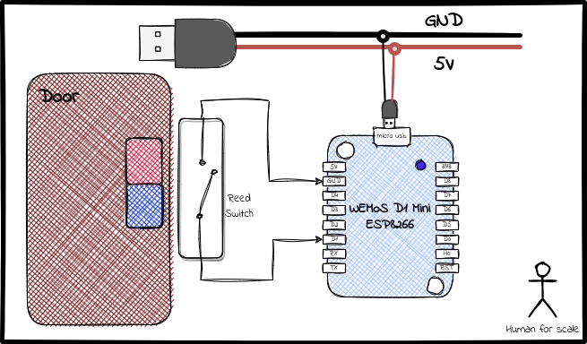

Door Sensor with ESP8266 and Reed Switch
Door sensors are incredibly valuable devices that serve multiple purposes. Not only do they enhance security monitoring, but they also allow for the setup of intelligent automations based on whether a door or window is open or closed.
The idea is simple. We have to program the microcontroller to detect the changes in the state of a switch, and use a switch that can turn on-off based on whether the door is open or closed. It can be as simple as a contact switch whch closes the circuit when the door is closed.
We will utilize a Reed Switch instead, a simple yet ingenious device that promptly responds to the presence of a magnetic field, whether it's generated by a permanent magnet or by electromagnet.
🧭 The Problem
The minimal requirement for this project is as follows:
- Wemos D1 Mini (
ESP8266based board) -
This task is straightforward and requires a simple connection of the reed switch to a GPIO pin to detect state changes. The reed switch offers two variants: a Normally Open one that closes in the presence of a magnetic field, and a Normally Closed one that opens when exposed to a magnetic field. For this example, I am using a normally open switch, which will close when a magnet comes in the proximity.
🔌 The Circuit
The circuit diagram for this project is very simple. The reed switch comes with two ends, and all we need to do is connect one end to either the GND or 3.3V pin, while the other one to a GPIO pin. Depending on where the first end is connected to, closing the switch will pull the GPIO pin to a low or a high. For this case, I am connecting one end to GND and one to D1.

Now, here's something to consider. With the current circuit, when the switch is closed, D1 will be pulled low, and it will remain low until it's manually pulled high by connecting it to 3.3V. However, we want the desired behavior where the pin automatically gets pulled high when the switch is open. To achieve this, we'll need to use a pull-up resistor. The simplest way is to utilize the internal pull-up resistor by specifying pin mode INPUT_PULLUP.
Finally, we'll power the Wemos D1 Mini using a USB cable, but feel free to choose any other suitable power source as per your preference. With everything set up correctly, we are now ready to dive into the sketch.
🐝 The Code
We define a variable doorState which will hold the current state of the door. More specifically the doorPin state. We can now detect the change in state by comparing doorState to doorPin state. The doorPin is set to mode INPUT_PULLUP. So, when no external signal is given to the pin, it defaults to HIGH. That is all the setup is needed.
//Reed switch const int doorPin = D1; int doorState = 2; void setup() { // Serial setup Serial.begin(115200); Serial.println(); // Reed switch setup pinMode(doorPin, INPUT_PULLUP); }
For the process loop, the esp reads the state of doorPin and compares it to the saved doorState. If it is not same, then the state has changed. If state has changed to a LOW, that means the switch is closed and if it changes to a HIGH, the switch is opened.
void loop() { int readPin = digitalRead(doorPin); if (readPin != doorState) { doorState = readPin; if(doorState == LOW){ Serial.println("Door closed"); // Do stuff when door is closed }else { Serial.println("Door opened"); // Do stuff when door is opened } } delay(1000)
As we are using a normally open switch, switch closed means door closed. As simple as that.
🌯 The Wrap-up
The beauty of this project lies in its simplicity and versatility. Now that we have the foundation set up, the possibilities are endless. You can easily add any logic you desire to this code, allowing you to achieve a wide range of exciting functionalities.
For instance, you can effortlessly publish the state of the door to an MQTT topic, enabling seamless integration with other smart devices or systems. Want to trigger an alarm when door opens? Add a tiny speaker to the controller. The flexibility of this code makes it a perfect fit for customizing it according to your preferences and needs.
And here's the best part: you can use the same code with any type of switch! Whether it's a reed switch like we've used here or any other type to detect changes in state and trigger an action.